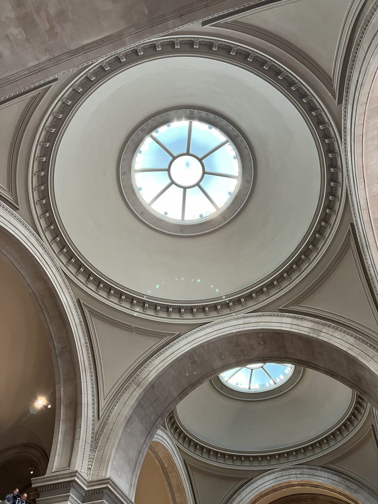
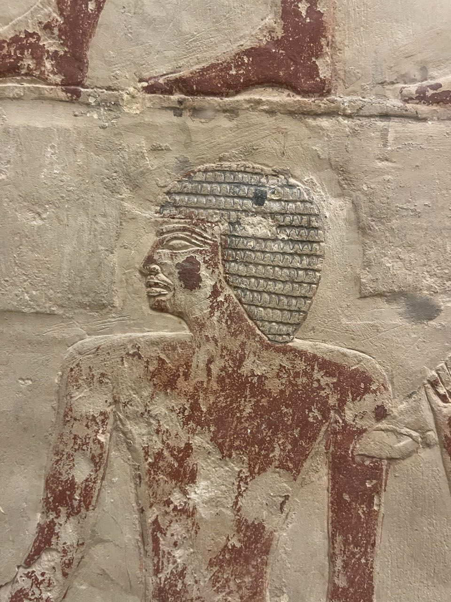
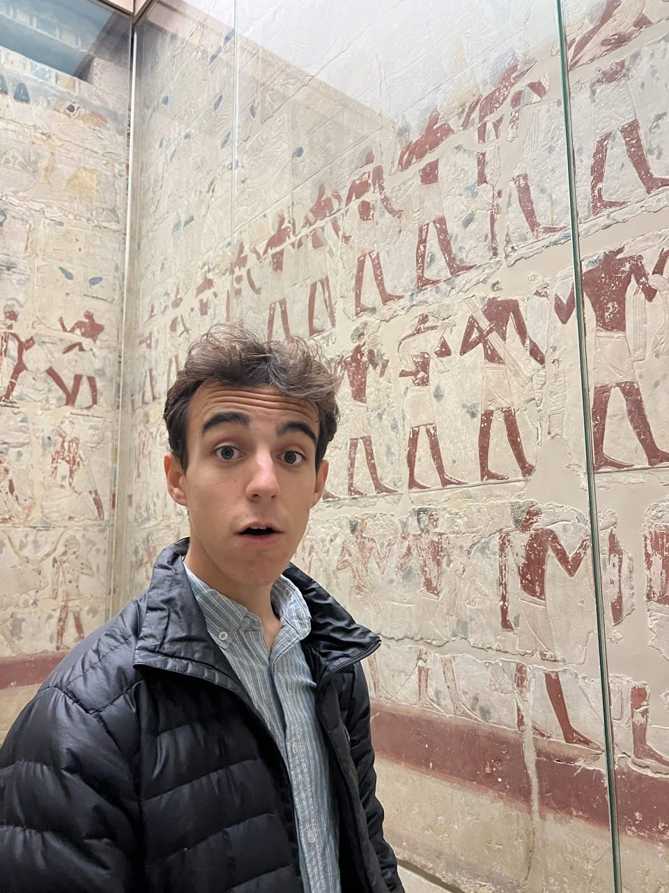

Vendredi & samedi matin · Ville & culture
Times Square, Central Park et l'Egypte au Met
Arrivée de nuit, direction Times Square : la démesure américaine dans toute sa splendeur, une foule immense, du bruit partout, assez de lumière pour éblouir un aveugle. Repas rapide — pizza façon new-yorkaise pour l'un, poke bowl pour l'autre — avant de rejoindre l'hôtel.
Le lendemain, traversée de Central Park (bien trop grand pour en faire le tour), puis direction le Metropolitan Museum of Art, un des musées les plus connus du monde. Trois heures de visite en ont à peine couvert la moitié — avec un coup de cœur pour l'immense collection égyptienne, fascinante à voir en vrai plutôt qu'en photo dans un livre.


